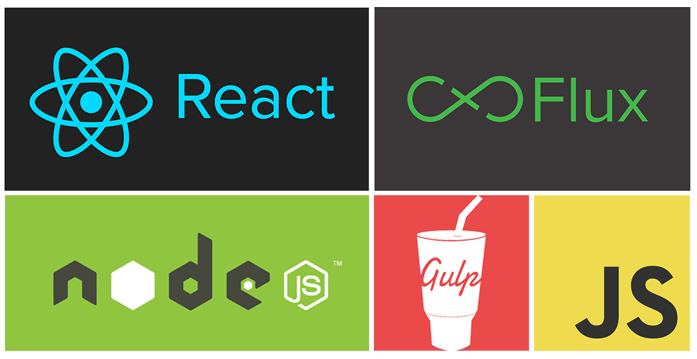

ReactJS Roller Coaster!

ReactJS was like riding a roller coaster🌀 At first. But i managed to find some solid ground and get into more advanced concepts like Flux.
Today i created my own Flux Boilerplate combining ReactJS with Flux, ES6, NodeJS and Gulp.

Feel free to check it out: Flux Boilerplate
What it finally all came down to is:
It’s all just JavaScript! With files in different places. Callbacks coming and going from one place to the other. Following each step and console logging it… i got the Flux structure down and it all made some sense.
Movie Flux
So after a lot of googling i managed to make my first flux project:
demo:
http://movie-flux.netlify.com/
Gulp!??🤔
Besides ReactJS and the architecture of Flux, i came across an interesting task runner that uses NodeJS to make a developer friendly productive environment it’s called Gulp and it does not suck😝.
I used Webpack to bundle stuff before, but Gulp is as easy as drinking a cold milkshake on a hot summer day.
The syntax is strait forward. And you can do a lot more with less code.
Basically what you can tell Gulp to do is:
Find all the JS files (ReactJS Components for example.) and translate them from ES6 syntax to browser readable syntax.
Bundle them all together and make 1 big compressed main JS file out of them. (some ppl call it bundle.js or main.js)
Put that file inside the dist folder.
Also copy over all the necessary HTML, CSS and Vendor files to the dist folder.
Once that is done you can open the Index.html file that is inside the dist file and your app should work in the browser.
Of course i added some gulp plugins to watch that dist folder and when something changes in the code it will live-reload the browser.
After i was done with it all i had to do is open the terminal and type in the command.
1 | gulp |
It automatically opens a browser window for me with my app running live in it. saving a lot of time and effort.
You can tell Gulp to do anything sky is the limit. It can even deploy the app for you if you want. I did not really get down to that part yet.
All the instruction for Gulp must be set in the gulpfile.js that should reside in the root of your project folder.
Lets get down to that code:
1 2 3 4 5 6 7 8 9 10 11 12 13 14 15 16 17 18 19 20 21 22 23 24 25 26 27 28 29 30 31 32 33 34 35 36 37 38 39 40 41 42 43 44 45 46 47 48 49 50 51 52 53 54 55 56 57 58 59 60 61 62 63 64 65 66 67 68 69 70 71 | // import Gulp var gulp = require('gulp'); // import the server for Gulp called gulp-connect var connect = require('gulp-connect'); // import browserify the code compiler. var browserify = require('browserify'); // import babelify that transforms babel ES6 to browser readable code. var babelify = require("babelify"); // reactify does almost the same as babelify but with more react stuff i guess. var reactify = require('reactify'); // this one is needed by gulp to prevent writing of temporary files // read this for more info: http://stackoverflow.com/questions/30794356/why-do-i-have-to-use-vinyl-source-stream-with-gulp var source = require('vinyl-source-stream'); // gulp open simply opens the browser window for you with the right url. var open = require('gulp-open'); // this is the server its task name is "connect". gulp.task('connect', function() { connect.server({ root: 'dist', livereload: true, port: 3000 }); }); // gulp watch is constantly monitoring the dist folder for changes its task name is "watch" gulp.task('watch', function () { gulp.watch(['dist/**/*.*'], ['html']); }); // this one watches the main html for changes then calles the "connect" task to reload. gulp.task('html', function () { gulp.src('dist/*.html') .pipe(connect.reload()); }); // "browserify" is the task responsible for transforming the code for the browser. and bundling it together inside the big main.js, finally putting it in the destination folder. gulp.task('browserify', function(){ browserify('src/js/main.js') .transform("babelify", {presets: ["es2015", "react"]}) .transform('reactify') .bundle() .pipe(source('main.js')) .pipe(gulp.dest('dist/js')); }); // the "copy" task copies the neccery file needed for the app to function normally. (see step 4. above) gulp.task('copy', function() { gulp.src('src/index.html') .pipe(gulp.dest('dist')); gulp.src('src/css/*.*') .pipe(gulp.dest('dist/css/')); gulp.src('src/js/vendors/*.*') .pipe(gulp.dest('dist/js')); }); // this task "app" uses the gulp-open to open your browser with the right url in it. gulp.task('app', function(){ var options = { uri: 'http://localhost:3070' }; gulp.src(__filename) .pipe(open(options)); }); // finally last but not least... this task.. executes all the tasks above 1 by 1. the final callback. gulp.task('default',['connect', 'app', 'browserify','copy','watch'],function() { return gulp.watch('src/**/*.*',['browserify', 'copy']); }); |
As you can see gulp code almost speaks for it self.
Gulping from the src/source and piping down the dest/destination with some gulp tasks.